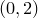

text [ item <id> ] '<text string>' [ at <x>, <y> ]
[ rotate <angle> ] [ gap <gap> ]
[ halign <alignment> ] [ valign <alignment> ]
[ with colour <colour> ]
The text command allows strings of text to a added as labels on multiplot canvases. The example
text 'Hello World!' at 0,2
would render the text ‘Hello World!’ at position , measured in centimetres. The alignment of the text item with respect to this position can be set using the set texthalign and set textvalign commands, or using the halign and valign modifiers supplied to the text command itself.
A gap may be specified, which should either have dimensions of length, or be dimensionless, in which case it is interpreted as being measured in centimetres. If a gap is specified, then the text string is slightly displaced from the specified position, in the direction in which it is being aligned.
A rotation angle may optionally be specified after the keyword rotate to produce text rotated to any arbitrary angle, measured in degrees counter-clockwise. The following example would produce upward-running text:
text 'Hello' at 1.5, 3.6 rotate 90
By default the text is black; however, an arbitrary colour may be specified using the with colour modifier. For example:
text 'A purple label' at 0, 0 with colour purple
would add a purple label at the origin of the multiplot.
Outside of multiplot mode, the text command can be used to produce images consisting simply of one single text item. This can be useful for importing LaTeXed equations as gif images into slideshow programs such as Microsoft Powerpoint which are incapable of producing such neat mathematical notation by themselves.
All vector graphics objects placed on multiplot canvases receive unique identification numbers which count sequentially from one, and which may be listed using the list command. By reference to these numbers, they can be deleted and subsequently restored with the delete and undelete commands respectively.